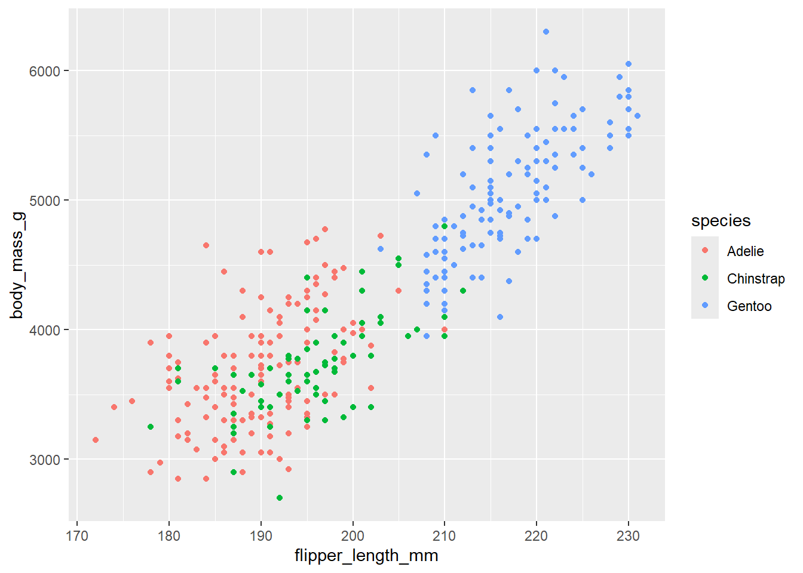
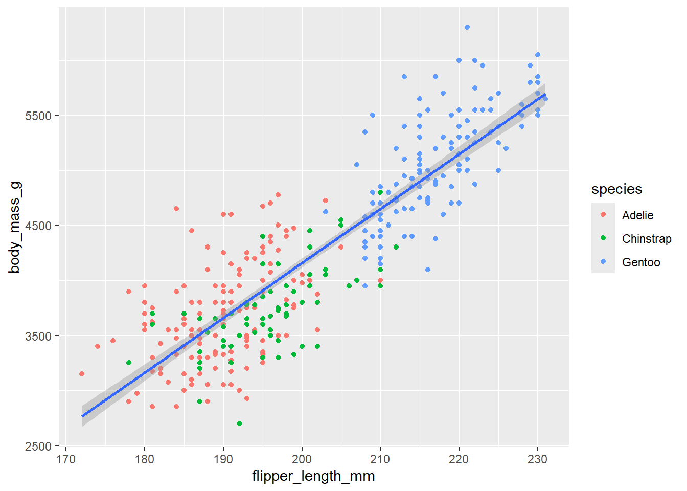

R과 데이터사이언스: 개요
실습 개요
이 실습은 R로 데이터사이언스를 하는 과정을 개괄적으로 이해하기 위한 것이다. 특히 Figure 1 에 나타나 있는 데이터사이언스 과정 중 특히 네 부분, 데이터 불러오기(importing), 정리하기(tidying), 변형하기(transforming), 시각화하기(visualizing)에 초첨을 맞춘다. 보통 데이터 정리하기와 변형하기를 합쳐 데이터와 씨름하기(wrangling)이라고 부르고, 정리하기와 시각화하기를 합쳐 탐색하기(exploring)라고 한다. 데이터를 살펴보기 위해 모델링을 사용하는 경우, 일부 모델링하기도 탐색하기에 포함되는 것으로 볼 수도 있다.

데이터사이언스의 다양한 과업을 수행하기 위해 Base R의 함수들이 사용되고 있지만, 보통은 이와 함께 다양한 패키지(package)들이 널리 사용되고 있다. 따라서 본 실습에서는 우선 패키지의 사용과 관련된 부분을 다루고 뒤를 이어 데이터사이언스의 네 과제가 어떻게 이루어지는지 대략적으로 다룰 것이다.
- 패키지와 tidyverse
- 데이터 시각화하기
- 데이터 변형하기
- 데이터 정리하기
- 데이터 불러오기
1 패키지와 tidyverse 패키지
1.1 패키지
패키지는 유사한 과업을 수행하는데 도움을 주는 함수들의 묶음 정도로 정의할 수 있다. 현재 CRAN(The Comprehensive R Archive Network)에는 20,000개 정도의 패키지가 등록되어 있다고 한다. CRAN에 패키지를 등록하는게 쉽지 않은 일이기 때문에 GitHub과 같은 곳을 통해 접근 가능한 패키지까지 합치면 도채체 몇 개의 R 패키지가 세상에 존재하는지 알기 어렵다.
패키지를 사용하기 우선 패키지가 사용자의 디바이스에 물리적으로 인스톨되어 있어야 하고, R 세션에서 패키지를 불러와야 한다. 패키지를 인스톨하는 방법은 두 가지 이다. 스크립트 내에서 패키지를 반복해서 인스톨하는 것은 합리적이지 않기 때문에 전자의 관행을 추천한다.
Output 창의 Packages 탭 선택: Install 아이콘 클릭하고 패키지 이름 입력
스크립트 내에서 인스톨하기:
install.packages("패키지명")
쌍따옴표 속에 패키지 이름을 타이핑해야 한다. 한번 인스톨이 되면 업데이트하지 않는 한 새롭게 패키지를 인스톨할 필요가 없다. 인스톨된 패키지를 사용하려면 스크립트 내에서 다음과 같이 타이핑하고 실행한다.
괄호 속에 패키지명을 기입해야 한다.
install.packages()함수에서는 반드시 패키지명을 쌍따옴표로 싸야하지만, library()함수에서는 그렇지 않다. 불러온 패키지는 R 세션이 유지되는 동안 내내 사용할 수 있지만, R 세션을 끝내고 다시 시작하면 다시 library()함수를 이용해 다시 불러와야 한다. 그래서 R 스크립트 파일의 시작 부분에는 패키지를 불러오는 코드를 위치시키고, 다시 스크립트 파일을 열 때마다 그 부분을 재실행하는 것이 좋은 습관이다.
1.2 tidyverse 패키지
데이터사이언스 과정의 각 단계는 특징적인 과업으로 구성되어 있고, 거기에 맞춰 특징적인 함수들을 장착한 패키지들이 개발되어 왔다. 그런데 최근 RStudio는 데이터사이언스와 밀접히 관련된 패키지들을 모아 일종의 엄브렐러 패키지인 tidyverse를 만들어 제공하고 있다. tidyverse 패키지는 패키지의 패키지인데, 핵심적인 구성 패키지에 다음과 같은 것들이 있다.
ggplot2: 시각화하기dplyr: 변형하기tidyr:정리하기readr: 불러오기tibble: 데이터 프레임 관련stringr: 문자열 처리 관련forcats: 범주 변수(팩터) 처리 관련lubracate: 시간 변수 처리 관련purrr: 함수형 프로그래밍(functional programming) 관련
tidyverse 패키지를 사용하는 것의 장점은 이 패키지만 불러오면 구성 패키지까지 한꺼번에 사용할 수 있게 된다는 점이다. 스크립트 내에서 다음과 같은 코드를 실행한다.
2 시각화하기
2.1 데이터 살펴보기
이 실습을 위해 남극 파머군도(Palmer Archipelago)에 서식하는 펭귄 성체의 신체 계측 데이터를 사용한다. 이 데이터는 palmerpenguins라는 패키지에 포함되어 있으므로 해당 패키지를 불러온다.
이제 이 페키지에 포함되어 있는 penguins라는 이름의 데이터를 불러온다.
penguins# A tibble: 344 × 8
species island bill_length_mm bill_depth_mm flipper_length_mm body_mass_g
<fct> <fct> <dbl> <dbl> <int> <int>
1 Adelie Torgersen 39.1 18.7 181 3750
2 Adelie Torgersen 39.5 17.4 186 3800
3 Adelie Torgersen 40.3 18 195 3250
4 Adelie Torgersen NA NA NA NA
5 Adelie Torgersen 36.7 19.3 193 3450
6 Adelie Torgersen 39.3 20.6 190 3650
7 Adelie Torgersen 38.9 17.8 181 3625
8 Adelie Torgersen 39.2 19.6 195 4675
9 Adelie Torgersen 34.1 18.1 193 3475
10 Adelie Torgersen 42 20.2 190 4250
# ℹ 334 more rows
# ℹ 2 more variables: sex <fct>, year <int>데이터를 자세히 살펴보면 몇 가지를 알 수 있다.
티블(
tibble)이라는 형식의 데이터 프레임이다. 티블은tidyverse의 공식 데이터 프레임 포맷이다.관측개체는 344개, 변수는 8개이다.
species,island,sex변수의 유형은 팩트형(fctr)이고,bill_length_mm,bill_depth_mm은 실수형(dbl)이고, 나머지는 정수형(int)이다.
변수가 많아지면 전체 데이터를 조망하기 어렵기 때문에, 최초의 tidyverse 함수인 glimpse()를 사용하여 데이터의 행과 열을 바꾸어 보자.
glimpse(penguins)Rows: 344
Columns: 8
$ species <fct> Adelie, Adelie, Adelie, Adelie, Adelie, Adelie, Adel…
$ island <fct> Torgersen, Torgersen, Torgersen, Torgersen, Torgerse…
$ bill_length_mm <dbl> 39.1, 39.5, 40.3, NA, 36.7, 39.3, 38.9, 39.2, 34.1, …
$ bill_depth_mm <dbl> 18.7, 17.4, 18.0, NA, 19.3, 20.6, 17.8, 19.6, 18.1, …
$ flipper_length_mm <int> 181, 186, 195, NA, 193, 190, 181, 195, 193, 190, 186…
$ body_mass_g <int> 3750, 3800, 3250, NA, 3450, 3650, 3625, 4675, 3475, …
$ sex <fct> male, female, female, NA, female, male, female, male…
$ year <int> 2007, 2007, 2007, 2007, 2007, 2007, 2007, 2007, 2007…2.2 그래프 만들기
이 penguins 데이터와 ggplot2() 패키지를 이용하여 “펭귄의 날개 길이와 몸무게의 관계”를 표현하는 그래프를 작성해 보자. ggplot2()의 문법에 대한 사항은 따로 공부할 기회가 있으므로 여기서는 제작 과정을 한 번 따라가 본다.
2.2.1 플롯 객체의 지정
ggplot()이라는 함수를 통해 플롯 제작을 개시하는 단계이며, 어떤 데이터를 사용할지를 지정한다.
ggplot(data = penguins)
2.2.2 플롯의 심미성 지정
데이터가 어떤 시각적 속성으로 표현될 것인가를 지정한다. 여기서는 간단히 어떤 변수들이 x-축과 y-축에 나타나는지만 지정한다. mapping = aes() 아규먼트가 핵심이다.

2.2.3 플롯의 기하 속성 지정
데이터가 어떤 기하학적 속성으로 표현될 것인가를 지정한다. geom 아규먼트가 핵심인데, geom_point()는 데이터를 포인트라고 하는 기하학적 속성으로 표현한다는 것을 지정한 것으로 결국 산포도(scatterplot)을 산출하게 된다.
ggplot(
data = penguins,
mapping = aes(x = flipper_length_mm, y = body_mass_g)
) +
geom_point()
2.2.4 심미성의 첨가
이러한 관련성이 펭귄의 종족에 따라 다르게 나타나는지를 탐색하기 위해 color 라는 심미성을 species라는 변수에 적용한다.
ggplot(
data = penguins,
mapping = aes(x = flipper_length_mm, y = body_mass_g, color = species)
) +
geom_point()
2.2.5 기하 레이어의 첨가
두 변수의 관련성을 보여주는 선형 기하를 첨가한다. 여기서는 geom_smooth()를 이용하여 OLS 회귀선을 첨가한다.
ggplot(
data = penguins,
mapping = aes(x = flipper_length_mm, y = body_mass_g)
) +
geom_point(mapping = aes(color = species)) +
geom_smooth(method = "lm")
2.2.6 라벨링 등 마무리 작업
ggplot(
data = penguins,
mapping = aes(x = flipper_length_mm, y = body_mass_g)
) +
geom_point(mapping = aes(color = species)) +
geom_smooth(method = "lm") +
labs(
title = "Body mass and flipper length",
subtitle = "Dimensions for Adelie, Chinstrap, and Gentoo Penguins",
x = "Flipper length (mm)", y = "Body mass (g)",
color = "Species", shape = "Species"
)3 변형하기
변형하기와 관련된 함수들은 대부분 dplyr 패키지에 포함되어 있다.
3.1 데이터 살펴보기
이 실습을 위해 미국 교통통계국(U.S. Bureau of Transportation)이 제공하는 데이터를 사용하는데, 이것은 2013년 한 해 동안 미국 뉴욕시를 출발한 336,776대의 항공기에 대한 정보를 담고 있다. 이 데이터는 nycflights13 이라는 패키지에 포함되어 있으므로 해당 패키지를 불러온다. 그리고 나서 패키지에 포함되어 있는 flights라는 이름의 데이터를 불러온다.
library(nycflights13)
glimpse(flights)Rows: 336,776
Columns: 19
$ year <int> 2013, 2013, 2013, 2013, 2013, 2013, 2013, 2013, 2013, 2…
$ month <int> 1, 1, 1, 1, 1, 1, 1, 1, 1, 1, 1, 1, 1, 1, 1, 1, 1, 1, 1…
$ day <int> 1, 1, 1, 1, 1, 1, 1, 1, 1, 1, 1, 1, 1, 1, 1, 1, 1, 1, 1…
$ dep_time <int> 517, 533, 542, 544, 554, 554, 555, 557, 557, 558, 558, …
$ sched_dep_time <int> 515, 529, 540, 545, 600, 558, 600, 600, 600, 600, 600, …
$ dep_delay <dbl> 2, 4, 2, -1, -6, -4, -5, -3, -3, -2, -2, -2, -2, -2, -1…
$ arr_time <int> 830, 850, 923, 1004, 812, 740, 913, 709, 838, 753, 849,…
$ sched_arr_time <int> 819, 830, 850, 1022, 837, 728, 854, 723, 846, 745, 851,…
$ arr_delay <dbl> 11, 20, 33, -18, -25, 12, 19, -14, -8, 8, -2, -3, 7, -1…
$ carrier <chr> "UA", "UA", "AA", "B6", "DL", "UA", "B6", "EV", "B6", "…
$ flight <int> 1545, 1714, 1141, 725, 461, 1696, 507, 5708, 79, 301, 4…
$ tailnum <chr> "N14228", "N24211", "N619AA", "N804JB", "N668DN", "N394…
$ origin <chr> "EWR", "LGA", "JFK", "JFK", "LGA", "EWR", "EWR", "LGA",…
$ dest <chr> "IAH", "IAH", "MIA", "BQN", "ATL", "ORD", "FLL", "IAD",…
$ air_time <dbl> 227, 227, 160, 183, 116, 150, 158, 53, 140, 138, 149, 1…
$ distance <dbl> 1400, 1416, 1089, 1576, 762, 719, 1065, 229, 944, 733, …
$ hour <dbl> 5, 5, 5, 5, 6, 5, 6, 6, 6, 6, 6, 6, 6, 6, 6, 5, 6, 6, 6…
$ minute <dbl> 15, 29, 40, 45, 0, 58, 0, 0, 0, 0, 0, 0, 0, 0, 0, 59, 0…
$ time_hour <dttm> 2013-01-01 05:00:00, 2013-01-01 05:00:00, 2013-01-01 0…3.2 주요 함수
여기서는 가장 널리 사용되는 6개 함수에 대해서만 개략적으로 다룬다. 그 6개 함수는 select(), filter(), arrange(), mutate(), group_by(), summerize()이다. 조교의 도움을 받아 각 함수가 무슨 일을 한 것인지 이해한다.
3.2.1 select() 함수
열(변수) 중 일부를 솎아낸다. 즉, 변수의 갯수를 줄인다.
select(flights, year, month, day)# A tibble: 336,776 × 3
year month day
<int> <int> <int>
1 2013 1 1
2 2013 1 1
3 2013 1 1
4 2013 1 1
5 2013 1 1
6 2013 1 1
7 2013 1 1
8 2013 1 1
9 2013 1 1
10 2013 1 1
# ℹ 336,766 more rows
3.2.2 filter() 함수
특정 열(변수)에 의거해 조건을 만족하는 행을 솎아낸다. 즉 관측개체의 갯수를 줄인다.
filter(flights, month == 1 & day == 1)# A tibble: 842 × 19
year month day dep_time sched_dep_time dep_delay arr_time sched_arr_time
<int> <int> <int> <int> <int> <dbl> <int> <int>
1 2013 1 1 517 515 2 830 819
2 2013 1 1 533 529 4 850 830
3 2013 1 1 542 540 2 923 850
4 2013 1 1 544 545 -1 1004 1022
5 2013 1 1 554 600 -6 812 837
6 2013 1 1 554 558 -4 740 728
7 2013 1 1 555 600 -5 913 854
8 2013 1 1 557 600 -3 709 723
9 2013 1 1 557 600 -3 838 846
10 2013 1 1 558 600 -2 753 745
# ℹ 832 more rows
# ℹ 11 more variables: arr_delay <dbl>, carrier <chr>, flight <int>,
# tailnum <chr>, origin <chr>, dest <chr>, air_time <dbl>, distance <dbl>,
# hour <dbl>, minute <dbl>, time_hour <dttm>
3.2.3 arrange() 함수
특정 열(변수)에 의거해 행의 순서를 바꾼다.
arrange(flights, year, month, day)# A tibble: 336,776 × 19
year month day dep_time sched_dep_time dep_delay arr_time sched_arr_time
<int> <int> <int> <int> <int> <dbl> <int> <int>
1 2013 1 1 517 515 2 830 819
2 2013 1 1 533 529 4 850 830
3 2013 1 1 542 540 2 923 850
4 2013 1 1 544 545 -1 1004 1022
5 2013 1 1 554 600 -6 812 837
6 2013 1 1 554 558 -4 740 728
7 2013 1 1 555 600 -5 913 854
8 2013 1 1 557 600 -3 709 723
9 2013 1 1 557 600 -3 838 846
10 2013 1 1 558 600 -2 753 745
# ℹ 336,766 more rows
# ℹ 11 more variables: arr_delay <dbl>, carrier <chr>, flight <int>,
# tailnum <chr>, origin <chr>, dest <chr>, air_time <dbl>, distance <dbl>,
# hour <dbl>, minute <dbl>, time_hour <dttm>
3.2.4 mutate() 함수
기존의 열(변수)을 변형하여 새로운 열(변수)을 생성한다.
mutate(flights,
gain = dep_delay - arr_delay,
speed = distance / air_time * 60
)# A tibble: 336,776 × 21
year month day dep_time sched_dep_time dep_delay arr_time sched_arr_time
<int> <int> <int> <int> <int> <dbl> <int> <int>
1 2013 1 1 517 515 2 830 819
2 2013 1 1 533 529 4 850 830
3 2013 1 1 542 540 2 923 850
4 2013 1 1 544 545 -1 1004 1022
5 2013 1 1 554 600 -6 812 837
6 2013 1 1 554 558 -4 740 728
7 2013 1 1 555 600 -5 913 854
8 2013 1 1 557 600 -3 709 723
9 2013 1 1 557 600 -3 838 846
10 2013 1 1 558 600 -2 753 745
# ℹ 336,766 more rows
# ℹ 13 more variables: arr_delay <dbl>, carrier <chr>, flight <int>,
# tailnum <chr>, origin <chr>, dest <chr>, air_time <dbl>, distance <dbl>,
# hour <dbl>, minute <dbl>, time_hour <dttm>, gain <dbl>, speed <dbl>
3.2.5 group_by() 함수
열(변수)(범주형 변수, categorical variables)에 의거해 전체 행을 그룹으로 분할한다.
group_by(flights, month)# A tibble: 336,776 × 19
# Groups: month [12]
year month day dep_time sched_dep_time dep_delay arr_time sched_arr_time
<int> <int> <int> <int> <int> <dbl> <int> <int>
1 2013 1 1 517 515 2 830 819
2 2013 1 1 533 529 4 850 830
3 2013 1 1 542 540 2 923 850
4 2013 1 1 544 545 -1 1004 1022
5 2013 1 1 554 600 -6 812 837
6 2013 1 1 554 558 -4 740 728
7 2013 1 1 555 600 -5 913 854
8 2013 1 1 557 600 -3 709 723
9 2013 1 1 557 600 -3 838 846
10 2013 1 1 558 600 -2 753 745
# ℹ 336,766 more rows
# ℹ 11 more variables: arr_delay <dbl>, carrier <chr>, flight <int>,
# tailnum <chr>, origin <chr>, dest <chr>, air_time <dbl>, distance <dbl>,
# hour <dbl>, minute <dbl>, time_hour <dttm>
3.2.6 summerize() 함수
열(변수)의 통계량을 산출하여 새로운 열(변수)에 저장한다.
위의 group_by() 함수와 결합하면, 그룹별로 열(변수)의 통계량을 산출하여 새로운 열(변수)에 저장할 수 있다.
by_day <- group_by(flights, year, month, day)
summarize(by_day, delay = mean(dep_delay, na.rm = TRUE))# A tibble: 365 × 4
# Groups: year, month [12]
year month day delay
<int> <int> <int> <dbl>
1 2013 1 1 11.5
2 2013 1 2 13.9
3 2013 1 3 11.0
4 2013 1 4 8.95
5 2013 1 5 5.73
6 2013 1 6 7.15
7 2013 1 7 5.42
8 2013 1 8 2.55
9 2013 1 9 2.28
10 2013 1 10 2.84
# ℹ 355 more rows4 정리하기
정리하기와 관련된 함수들은 대부분 tidyr 패키지에 포함되어 있다. 많은 함수가 있지만 가장 중요한 두 개의 함수에만 집중한다.
4.1 데이터 살펴보기
이 실습에서는 tidyverse에 포함되어 있는 매우 단순한 데이터를 사용한다.
table4a# A tibble: 3 × 3
country `1999` `2000`
<chr> <dbl> <dbl>
1 Afghanistan 745 2666
2 Brazil 37737 80488
3 China 212258 213766table2# A tibble: 12 × 4
country year type count
<chr> <dbl> <chr> <dbl>
1 Afghanistan 1999 cases 745
2 Afghanistan 1999 population 19987071
3 Afghanistan 2000 cases 2666
4 Afghanistan 2000 population 20595360
5 Brazil 1999 cases 37737
6 Brazil 1999 population 172006362
7 Brazil 2000 cases 80488
8 Brazil 2000 population 174504898
9 China 1999 cases 212258
10 China 1999 population 1272915272
11 China 2000 cases 213766
12 China 2000 population 12804285834.2 주요 함수
4.2.1 pivot_longer() 함수
table4a에서 1999과 2000은 변수명일 수 없다. year라는 변수의 속성이어야 한다.
pivot_longer(
table4a,
cols = c(`1999`, `2000`),
names_to = "year",
values_to = "cases"
)# A tibble: 6 × 3
country year cases
<chr> <chr> <dbl>
1 Afghanistan 1999 745
2 Afghanistan 2000 2666
3 Brazil 1999 37737
4 Brazil 2000 80488
5 China 1999 212258
6 China 2000 213766
4.2.2 pivot_wider() 함수
table2에서 type 변수는 두 개의 변수명을 포함하고 있다. 즉, cases와 population은 속성값이라기 보다는 변수명이다.
pivot_wider(
table2,
names_from = "type",
values_from = "count"
)# A tibble: 6 × 4
country year cases population
<chr> <dbl> <dbl> <dbl>
1 Afghanistan 1999 745 19987071
2 Afghanistan 2000 2666 20595360
3 Brazil 1999 37737 172006362
4 Brazil 2000 80488 174504898
5 China 1999 212258 1272915272
6 China 2000 213766 12804285835 불러오기
불러오기와 관련된 함수들은 대부분 readr 패키지에 포함되어 있다. 여러 유형의 파일을 불러오기 위해 여러 함수가 존재하지만, 콤마분리값(comma-separated values, CSV) 형식의 데이터를 불러오는 함수(read_csv())만 실습한다.
Rows: 6
Columns: 5
$ `Student ID` <dbl> 1, 2, 3, 4, 5, 6
$ `Full Name` <chr> "Sunil Huffmann", "Barclay Lynn", "Jayendra Lyne", "Leo…
$ favourite.food <chr> "Strawberry yoghurt", "French fries", "N/A", "Anchovies…
$ mealPlan <chr> "Lunch only", "Lunch only", "Breakfast and lunch", "Lun…
$ AGE <chr> "4", "5", "7", NA, "five", "6"6 파이프 연산자(pipe operator)
우리는 이전 실습에서 할당 연산자(<-)에 대해 배웠다. 오늘 살펴본 다양한 변형의 결과를 다른 데이터 프레임에 담고 싶으면 다음과 같이 할당 연산자를 사용할 수 있다.
Rows: 842
Columns: 19
$ year <int> 2013, 2013, 2013, 2013, 2013, 2013, 2013, 2013, 2013, 2…
$ month <int> 1, 1, 1, 1, 1, 1, 1, 1, 1, 1, 1, 1, 1, 1, 1, 1, 1, 1, 1…
$ day <int> 1, 1, 1, 1, 1, 1, 1, 1, 1, 1, 1, 1, 1, 1, 1, 1, 1, 1, 1…
$ dep_time <int> 517, 533, 542, 544, 554, 554, 555, 557, 557, 558, 558, …
$ sched_dep_time <int> 515, 529, 540, 545, 600, 558, 600, 600, 600, 600, 600, …
$ dep_delay <dbl> 2, 4, 2, -1, -6, -4, -5, -3, -3, -2, -2, -2, -2, -2, -1…
$ arr_time <int> 830, 850, 923, 1004, 812, 740, 913, 709, 838, 753, 849,…
$ sched_arr_time <int> 819, 830, 850, 1022, 837, 728, 854, 723, 846, 745, 851,…
$ arr_delay <dbl> 11, 20, 33, -18, -25, 12, 19, -14, -8, 8, -2, -3, 7, -1…
$ carrier <chr> "UA", "UA", "AA", "B6", "DL", "UA", "B6", "EV", "B6", "…
$ flight <int> 1545, 1714, 1141, 725, 461, 1696, 507, 5708, 79, 301, 4…
$ tailnum <chr> "N14228", "N24211", "N619AA", "N804JB", "N668DN", "N394…
$ origin <chr> "EWR", "LGA", "JFK", "JFK", "LGA", "EWR", "EWR", "LGA",…
$ dest <chr> "IAH", "IAH", "MIA", "BQN", "ATL", "ORD", "FLL", "IAD",…
$ air_time <dbl> 227, 227, 160, 183, 116, 150, 158, 53, 140, 138, 149, 1…
$ distance <dbl> 1400, 1416, 1089, 1576, 762, 719, 1065, 229, 944, 733, …
$ hour <dbl> 5, 5, 5, 5, 6, 5, 6, 6, 6, 6, 6, 6, 6, 6, 6, 5, 6, 6, 6…
$ minute <dbl> 15, 29, 40, 45, 0, 58, 0, 0, 0, 0, 0, 0, 0, 0, 0, 59, 0…
$ time_hour <dttm> 2013-01-01 05:00:00, 2013-01-01 05:00:00, 2013-01-01 0…앞으로 할당 연산자보다 훨씬 더 빈번하게 사용하게 될 연산자를 소개하려고 한다. 그것은 파이프 연산자(pipe operator)라는 것으로, %>% 혹은 |>로 표시하는 것이다. 원래 이 연산자의 원리는 magrittr 패키지에서 처음 소개되었는데, 차츰 R 커뮤니티에 파급되더니 급기야는 대세로 자리잡았다. 그래서 특정 패키지를 깔지 않아도 파이프 연산자를 사용할 수 있게 하기 위해 Base R에 도입되었고(이것을 원파이프 연산자(native pipe operator)라고 부른다), 부호로 %>% 대신 |>를 사용한다. 둘 사이에 차이는 거의 없지만, 후자가 점점 표준이 되고 있기 때문에 본 수업에서는 그것을 사용한다. 다음의 두 가지에 유의한다.
- 현재 RStudio의 디폴트는
%>%로 설정되어 있다. 이것을 Tools > Global Options > Code에 가서 ’Use native pipe operator, |> (requires R 4.1+)’를 선택해 주어야 한다. 아래의 Figure 2 를 참고하라.

- 단축키는 Crtl + Shift + M이다. 다른 건 몰라도 이 단축키만은 반드시 기억해야 한다.
다음의 두 코드를 비교해 보라. 먼저 파이프 연산자를 사용하지 않은 경우이다.
flights1 <- filter(flights, dest == "IAH")
flights2 <- mutate(flights1, speed = distance / air_time * 60)
flights3 <- select(flights2, year:day, dep_time, carrier, flight, speed)
arrange(flights3, desc(speed))# A tibble: 7,198 × 7
year month day dep_time carrier flight speed
<int> <int> <int> <int> <chr> <int> <dbl>
1 2013 7 9 707 UA 226 522.
2 2013 8 27 1850 UA 1128 521.
3 2013 8 28 902 UA 1711 519.
4 2013 8 28 2122 UA 1022 519.
5 2013 6 11 1628 UA 1178 515.
6 2013 8 27 1017 UA 333 515.
7 2013 8 27 1205 UA 1421 515.
8 2013 8 27 1758 UA 302 515.
9 2013 9 27 521 UA 252 515.
10 2013 8 28 625 UA 559 515.
# ℹ 7,188 more rows다음은 파이프 연산자를 사용한 경우이다. 동일한 결과를 가져다 주지만 훨신 더 간결하고 직관적이고 이해하기 쉽다. 파이프 연산자의 사용 원리는 뒤에서 자세히 배운다.
flights |>
filter(dest == "IAH") |>
mutate(speed = distance / air_time * 60) |>
select(year:day, dep_time, carrier, flight, speed) |>
arrange(desc(speed))# A tibble: 7,198 × 7
year month day dep_time carrier flight speed
<int> <int> <int> <int> <chr> <int> <dbl>
1 2013 7 9 707 UA 226 522.
2 2013 8 27 1850 UA 1128 521.
3 2013 8 28 902 UA 1711 519.
4 2013 8 28 2122 UA 1022 519.
5 2013 6 11 1628 UA 1178 515.
6 2013 8 27 1017 UA 333 515.
7 2013 8 27 1205 UA 1421 515.
8 2013 8 27 1758 UA 302 515.
9 2013 9 27 521 UA 252 515.
10 2013 8 28 625 UA 559 515.
# ℹ 7,188 more rows